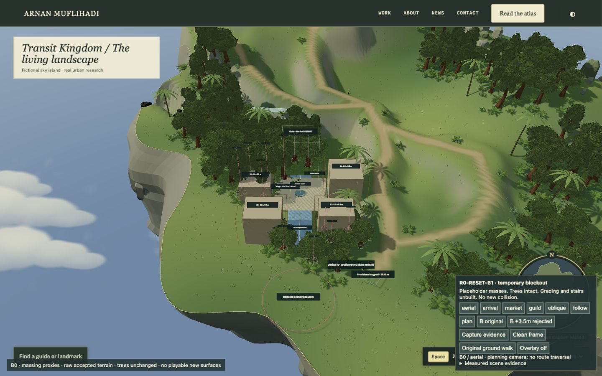
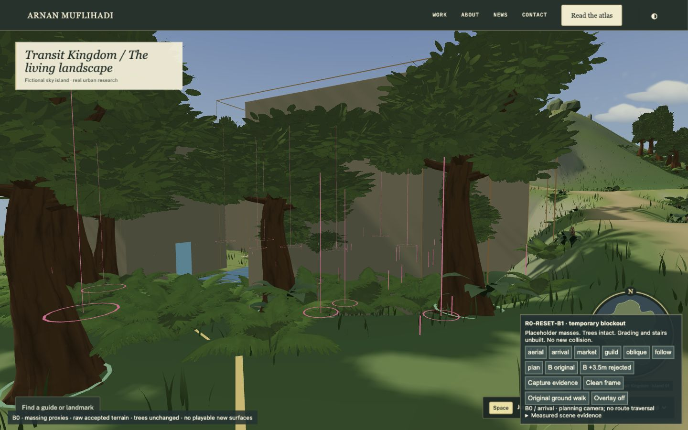
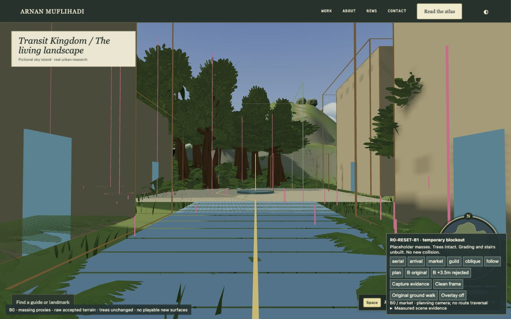
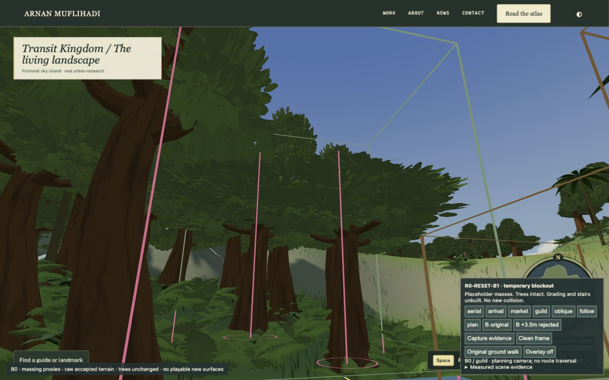
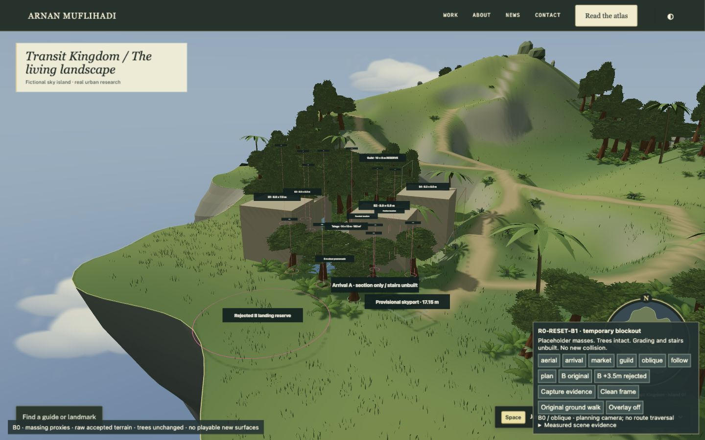
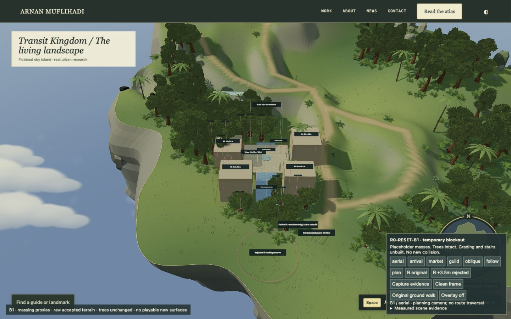
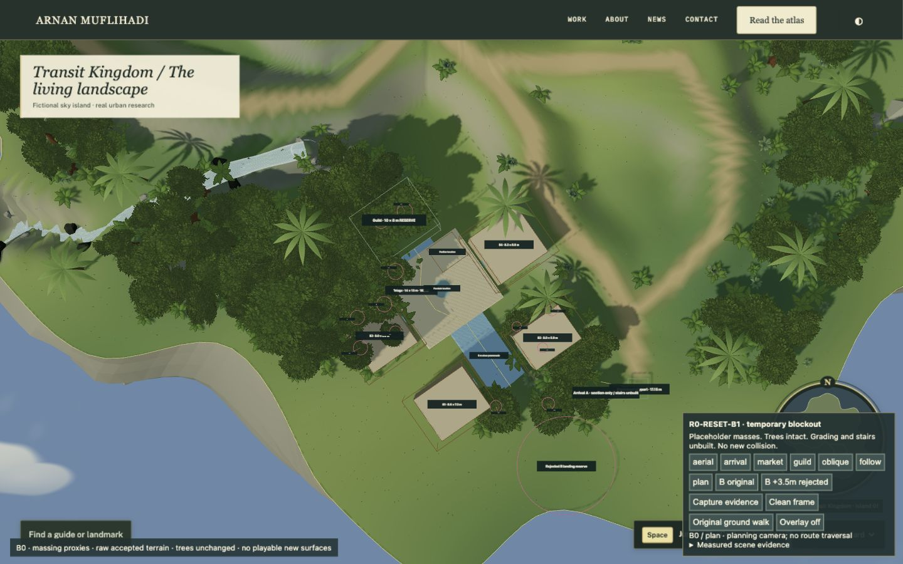

Southern bench feasibility
NO-GO under the current minimal-disturbance brief. Actual browser blockout views; trees intact, grading and stairs unbuilt. Owner decision pending.
Measured report · Temporary localhost preview

1. Aerial layout. Masses are placeholders at measured dimensions, with conservative model envelopes.

2. Retained skyport arrival, eye height 1.65 m above the provisional threshold. B2 and foliage interrupt the view toward the fountain.

3. Market Street. Its 6 m promenade reads as a street; the fountain sightline is clear. Cut/fill remains unapplied.

4. Fountain-side view toward the Guild reserve. Central test rays are clear; crowns crowd the wider frame.

5. Oblique site context. Pink markers identify tree conflicts and vertical ground/floor differences; they are not foundations.

6. Only tested adjustment: 3.5 m lateral translation. Less favorable grading and support needs outweigh reduced plot conflicts.

7. Top-down browser view. Dimensions and tree markers are planning annotations, not finished architecture.